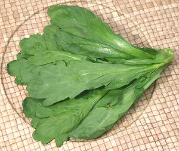

These greens come from a Chrysanthemum closely related to the decorative varieties, but with better flavor. Two varieties are sold, "Small Leaf" (photo to left) which is very common, and "Big Leaf" (photo below) which is still rare even here in Los Angeles.
Big leaf is milder and less aromatic than small leaf, so more suitable to use as a normal vegetable while small leaf is a better accent vegetable. Large leaf is also much less stemmy.
Chrysanthemum flowers are also often used for teas and medicinal purposes
in Asia, but they are generally yellow or white flowered varieties of
Chrysanthemum indicum rather than C. coronarium.
|
 Buying: The small leafed variety can be found in markets serving communities from Korean down to Southeast Asian. The big leaf variety is now sometimes seen in Los Angeles but probably even more rare in other parts of the country. Storing: Refrigerate loosely bagged in plastic and they'll last a few days. Cooking: These greens can be eaten raw, steamed, or included in soups or stir fries. Tender stems can be included in most recipes. They should not be overcooked as they will become mushy and may become bitter. In most cases they are added to recipes in the last few minutes. |